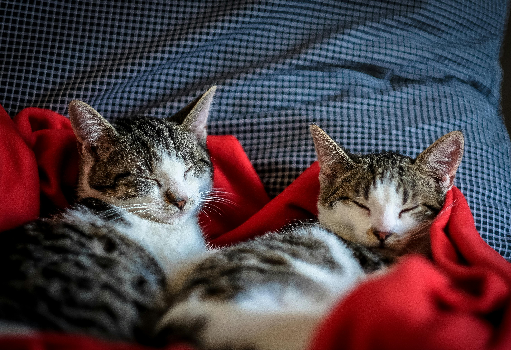

Adopción:
Nosotros
Pregunta Frecuentes
Conoce a Nuestros Valientes Aventureros:
Gatos que Han Encontrado su Hogar
En nuestra asociación, cada rescate es una historia de esperanza y cada adopción, un final feliz que merece ser contado. Nos enorgullece presentarles a algunos de los valientes aventureros que han encontrado su lugar en el mundo gracias al amor y compromiso de nuestra comunidad. Aunque ya no están con nosotros, su recuerdo vive en cada esquina de nuestro trabajo y en los corazones de sus nuevas familias.
|

Historia breve:
Felix y Cata, dos hermanitos inseparables, capturaron el corazón de una familia que buscaba no uno, sino dos nuevos miembros para compartir su amor y hogar.
Mensaje de la familia: "La llegada de Felix y Cata ha sido una bendición. Nos han enseñado el verdadero significado de la amistad y la alegría." |

Breve Historia:
Loki, un gatito de un año, encantó a una pareja desde el primer encuentro. Rápidamente se convirtió en el rey del hogar, aportando alegría y diversión a su nueva familia.
Mensaje de la familia: "Adoptar a Loki ha sido maravilloso. Nos ha enseñado a valorar los pequeños momentos de felicidad." |

Breve Historia:
Misty, pequeña y blanca una gata serena y de mirada sosegada, se cruzó en el camino de una persona que buscaba una compañera calmada y afectuosa. Mensaje de la dueña: "Adoptar a Misty ha sido una experiencia transformadora. Ella me ha enseñado a apreciar la calma y la paciencia." |

Breve Historia:
Jasper, con su pelaje naranja y esponjoso y juguetón, se convirtió en el centro de atención de una familia que deseaba la energía y calidez que solo un gato como él podía ofrecer. Su carácter juguetón y cariñoso los enamoró al instante. Mensaje de la familia: "La llegada de Jasper ha iluminado nuestras vidas. Su energía y amor nos hacen más felices cada día." |

Breve Historia:
Rocky, un gato con una energía desbordante , llegó a la vida de una familia activa que estaba buscando un compañero juguetón y cariñoso. Su personalidad encajó con el dinamismo de su nuevo hogar.
Mensaje de la familia: "Rocky ha sido una fuente constante de alegría y energía para nosotros. Nos ha enseñado a disfrutar aún más de cada momento y a valorar el tiempo en familia." |

Breve Historia:
Misha, de 9 meses una gata de suave pelaje naranja, juguetóna y ojos que destellan curiosidad, encontró su lugar en el mundo con un individuo que deseaba la compañía de un ser tan tranquilo y cariñoso como ella. Mensaje del dueño: "La llegada de Misha a mi vida ha sido un regalo. Su presencia es un recordatorio diario de la importancia de la calma , el afecto y el cariño que nos da." |